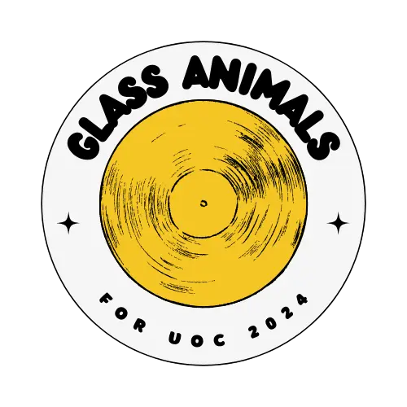

<footer>
  <nav>
    <ul>
      <li><a href="detalles-miembros.html">Miembros</a></li>
      <li><a href="detalles-historias.html">Historias</a></li>
      <li><a href="detalles-discos.html">Discos</a></li>
      <li><a href="categoria.html">Categorías</a></li>
      <li><a href="presentacion.html">Presentación</a></li>
      <li><a href="enlaces.html">Enlaces</a></li>
    </ul>
  </nav>
  <p>
    Proyecto para asignatura de Herramientas de HTML y CSS de
    <abbr title="Universitat Oberta de Catalunya">UOC</abbr>
  </p>
  <p>2024 &copy; Jia Wang</p>
  <a href="portada.html" class="footer-logo">
    
  </a>
</footer>
